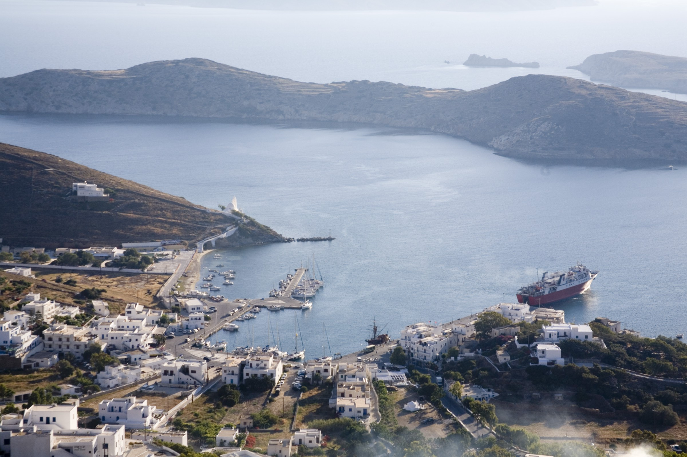

Πρακτικές πληροφορίες
Άφιξη, μετακινήσεις, απόλαυση
Πώς να έρθετε στην Ίο
Η Ίος δεν έχει αεροδρόμιο. Φτάνετε πάντα από τη θάλασσα, και οι διακοπές ξεκινούν ήδη από εκεί.
-
Το αεροπλάνο
Προσγειωθείτε στην Αθήνα ή απευθείας σε ένα κοντινό νησί: Σαντορίνη, Νάξο, Πάρο, Μύκονο ή Μήλο.
-
Το πλοίο
Από τη Σαντορίνη, η Ίος απέχει 35 λεπτά με ταχύπλοο. Από τον Πειραιά, υπολογίστε 4 ώρες με ταχύπλοο και 7 έως 8 ώρες με συμβατικό πλοίο.
-
Το λιμάνι, και μετά το σπίτι
Το πλοίο δένει στο λιμάνι της Ίου (Όρμος). Το σπίτι είναι περίπου 15 λεπτά με τα πόδια ή 5 λεπτά με ταξί.
Τα πιο κοντινά αεροδρόμια
Οι πιο σύντομοι χρόνοι με ταχύπλοο. Τα συμβατικά πλοία είναι πιο αργά και πιο φθηνά.
| Αεροδρόμιο | Πλοίο έως την Ίο | Δρομολόγια | Ιστότοπος |
|---|---|---|---|
| Σαντορίνη (JTR) | 35 λεπτά από το λιμάνι του Αθηνιού | Όλο τον χρόνο | jtr-airport.gr |
| Naxos (JNX) | 35 έως 45 λεπτά | Όλο τον χρόνο | greekairports.gr |
| Paros (PAS) | περίπου 1 ώρα | Όλο τον χρόνο | ypa.gr |
| Mykonos (JMK) | 1 ώρα 5 λεπτά έως 1 ώρα 20 λεπτά | Από Απρίλιο έως Οκτώβριο | jmk-airport.gr |
| Milos (MLO) | περίπου 2 ώρες | 2 έως 7 ημέρες την εβδομάδα | ypa.gr |
| Αθήνα (ATH) | Μέσω Πειραιά ή Ραφήνας, δείτε παρακάτω | Όλο τον χρόνο | aia.gr |
Πτήσεις για Νάξο, Πάρο και Μήλο από την Αθήνα: Olympic Air και Sky Express. Πτήσεις για Σαντορίνη και Μύκονο από όλη την Ευρώπη, για παράδειγμα με την Aegean Airlines.
Από την Αθήνα
Λιμάνι του Πειραιά
- Διάρκεια 4 ώρες 10 λεπτά με ταχύπλοο, 7 έως 8 ώρες με συμβατικό πλοίο
- Εταιρείες SeaJets, Blue Star Ferries
- Συχνότητα όλο τον χρόνο, σχεδόν καθημερινά
- Από το αεροδρόμιο μετρό γραμμή 3 χωρίς αλλαγή (περίπου 1 ώρα), λεωφορείο X96 (1 έως 1,5 ώρα, μέρα και νύχτα) ή ταξί
Λιμάνι της Ραφήνας
- Διάρκεια 3,5 έως 4,5 ώρες
- Εταιρείες Golden Star Ferries, SeaJets
- Συχνότητα στη σεζόν, περίπου από Μάιο έως Οκτώβριο
- Από το αεροδρόμιο το πιο κοντινό λιμάνι: 20 λεπτά με ταξί ή λεωφορείο KTEL (περίπου 30 λεπτά)
Κλείστε τα εισιτήριά σας στο Ferryhopper ή απευθείας στις εταιρείες. Τον Ιούλιο και τον Αύγουστο, τα μελτέμια μπορεί να καθυστερήσουν ή να ακυρώσουν δρομολόγια: αφήστε μία μέρα περιθώριο πριν από την πτήση της επιστροφής.
Μετακινήσεις στο νησί
Το λεωφορείο
- Κύρια γραμμή Λιμάνι, Χώρα, Μυλοπότας. Το καλοκαίρι, περνά λεωφορείο πολύ συχνά.
- Απομακρυσμένες παραλίες Μαγγανάρι, Αγία Θεοδότη, Ψάθη: ένα ή δύο δρομολόγια την ημέρα το καλοκαίρι
- Τιμές 2026 2,20 € έως τη Χώρα, τον Μυλοπότα ή την Κουμπάρα, 4,50 € έως το Μαγγανάρι
- Εισιτήρια στα αυτόματα μηχανήματα του σταθμού λεωφορείων στο λιμάνι
Τα ταξί
- Taxi 1 +30 697 873 4491
- Taxi 2 +30 698 568 9849
- Taxi 3 +30 697 809 6324
- Taxi 5 +30 697 776 0570
- Taxi 7 +30 697 703 1708
Το νησί έχει λίγα ταξί. Στην υψηλή περίοδο, κλείστε από την προηγούμενη μέρα για την άφιξη και την αναχώρηση.
Αυτοκίνητο, σκούτερ, γουρούνα
Αρκετά γραφεία ενοικίασης βρίσκονται στο λιμάνι. Το αυτοκίνητο βοηθά για τις απομονωμένες παραλίες του νότου και της ανατολής. Μια ιδιωτική θέση στάθμευσης σας περιμένει στο σπίτι.
Με τα πόδια
Ένα παλιό λιθόστρωτο μονοπάτι ανεβαίνει από το λιμάνι στη Χώρα: 1,2 χλμ. και 20 έως 25 λεπτά ανάβαση. Φορέστε καλά παπούτσια και αποφύγετε τις ζεστές ώρες.
Χρήσιμα τηλέφωνα
Έκτακτη ανάγκη
- 112 ευρωπαϊκός αριθμός έκτακτης ανάγκης
- 166 ασθενοφόρο
- 100 αστυνομία
- 199 πυροσβεστική
- 108 λιμενικό
Στο νησί
- Κέντρο Υγείας (Χώρα) +30 22863 60000
- Φαρμακεία +30 22860 91562, +30 22860 92100
- Αστυνομία +30 22860 91222
- Λιμεναρχείο +30 22860 91264
- ΚΤΕΛ Ίου (λεωφορεία) +30 22860 92015
ΑΤΜ και σούπερ μάρκετ στο λιμάνι και στη Χώρα. Τα πιο κοντινά στο σπίτι: το Mini Market στην παραλία του Γιαλού, 5 λεπτά με τα πόδια, και το Aegean Market στο λιμάνι, ανοιχτό κάθε μέρα από τις 8:00 έως τις 21:30, 10 λεπτά μακριά.
Πότε να έρθετε;
Η σεζόν διαρκεί από τον Μάιο έως τον Οκτώβριο. Ο Ιούνιος και ο Σεπτέμβριος έχουν ζεστή θάλασσα και λιγότερο κόσμο. Ο Απρίλιος, ο Μάιος και ο Οκτώβριος είναι ιδανικοί για περπάτημα.
| Ιαν | Φεβ | Μαρ | Απρ | Μάι | Ιούν | Ιούλ | Αύγ | Σεπ | Οκτ | Νοέ | Δεκ | |
|---|---|---|---|---|---|---|---|---|---|---|---|---|
| Αέρας, μέγιστη | 13° | 14° | 16° | 19° | 24° | 29° | 30° | 30° | 27° | 23° | 19° | 15° |
| Αέρας, ελάχιστη | 9° | 9° | 10° | 12° | 16° | 20° | 23° | 23° | 21° | 17° | 13° | 10° |
| Θάλασσα | 16° | 15° | 15° | 16° | 18° | 22° | 23° | 24° | 24° | 22° | 19° | 17° |
Το μελτέμι, ξηρός και δυνατός βοριάς, φυσά κυρίως τον Ιούλιο και τον Αύγουστο. Δροσίζει τις ζεστές μέρες. Τις μέρες με δυνατό αέρα, προτιμήστε τις νότιες παραλίες, όπως το Μαγγανάρι.
Χρήσιμοι σύνδεσμοι
- Ferryhopper δρομολόγια και εισιτήρια πλοίων
- SeaJets ταχύπλοα
- Blue Star Ferries συμβατικά πλοία
- KTEL Ios δρομολόγια λεωφορείων
- ios.gr Δήμος Ίου και webcam
- meteo.gr καιρός και άνεμος
- MarineTraffic παρακολουθήστε το πλοίο σας ζωντανά
- Ios Paths μονοπάτια πεζοπορίας
- Visit Greece Ελληνικός Οργανισμός Τουρισμού
Οι πληροφορίες ελέγχθηκαν τον Νοέμβριο του 2026. Τα δρομολόγια πλοίων και λεωφορείων αλλάζουν κάθε σεζόν: ελέγξτε τα πριν φύγετε.